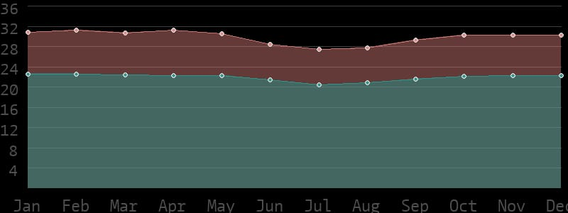
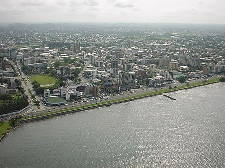
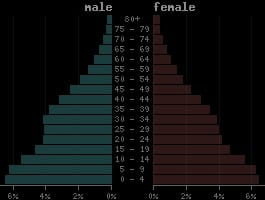

O clima no Gabão, como em todos os países equatoriais, existe um clima tropical. Não há
diferença entre as estações como aqui na Europa Central. A duração do dia dificilmente
varia e as diferenças de temperatura entre o verão e o inverno também são menores.
Dependendo da estação do ano, as temperaturas médias máximas diárias variam de 27 e
31 graus. Em algumas partes do país, os valores atingem 34 graus durante o dia.
Nos meses mais frios, a temperatura cai para uma média mensal de 20°C à noite,
dependendo da região.
Temperaturas médias diurnas e noturnas

Capital e principais cidades:

O nome oficial do país é República Gabonesa e a capital da cidade é a cidade Libreville,
que está situada no litoral. Port-Gentil e Franceville são, além da capital, cidades
importantes. Gabão é um país situado na porção central do continente africano. Cortado pela linha do
Equador, faz fronteira a leste e sudeste com a República do Congo, a norte com Camarões
e a noroeste com a Guiné Equatorial. A porção oeste é banhada pelo Oceano Atlântico
Densidade Demográfica
A pequena densidade populacional do Gabão (1,4 milhão de habitantes), que
corresponde à população somente de Porto Alegre, possibilita a boa
distribuição de renda.
"A população do Gabão é uma das menores do continente africano. O país conta,
atualmente, com 2.279.000 habitantes, o que corresponde a 0,16% de toda a população da
África. Além de pouco populoso, o território gabonês é pouco povoado. Isso significa que a
distribuição populacional que acontece no país é baixa, da ordem de 8,8 hab./km². Existem
áreas com maior ou menor concentração de pessoas, sendo a principal delas o entorno da
capital nacional, Libreville, onde vivem 870 mil gaboneses. No total, 91% da população do
Gabão habitam o meio urbano.

Habitantes:
2.389.000
População por km²:
8,925
Esperança de vida homens:
Ø 63,5 anos
Expectativa de vida mulheres:
Ø 68,5 anos
Taxa de nascimento:
27,1 ‰
Taxa de mortalidade:
7,3 ‰
Homens/Mulheres:
50,9% : 49,1%
Relevo do Gabão:
O Gabão, localizado na costa oeste da África Central, apresenta um relevo
diversificado que inclui planícies costeiras, planaltos, montanhas e bacias
sedimentares.Ao longo da costa oeste do Gabão.
. Essas planícies costeiras são importantes ecossistemas
para a vida selvagem marinha. O Gabão possui vastos planaltos e planícies interiores, muitos cobertos por
florestas tropicais. O Planalto Batéké é uma das principais formações dessa região,
caracterizado por uma topografia mais elevada.